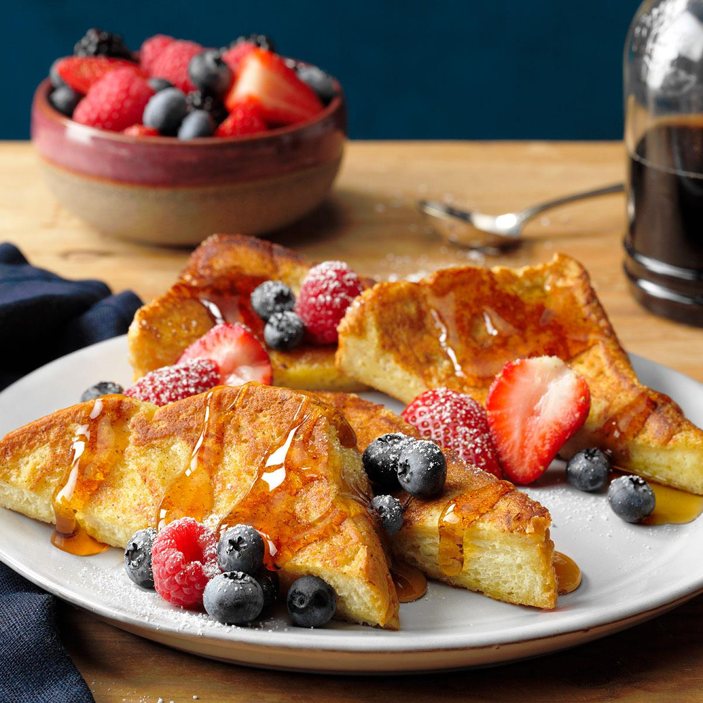

French Toast

Description
This recipe is a bit outside-the-box as it uses flour and produces extra fluffly toast. Enjoy!
Ingredients
- Quarter Cup all-purpose flour
- 1 cup milk
- 3 eggs
- 1 tbsp sugar
- 1 tsp vanilla extract
- Half tsp ground cinnamon
- 1 pinch salt
- 12 thick bread slices
Directions
- Measure flour into mixing bowl. Slowly whisk in milk, eggs, sugar, vanilla extract, cinnamon and salt until smooth.
- Heat lightly oiled griddle or frying pan over medium heat.
- Soak bread slices in milk mixture until saturated.
- Working in batches, cook bread on the preheated griddle or pan until golden brown on each side. Serve hot.